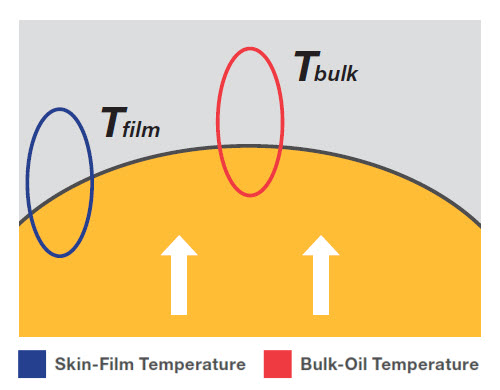
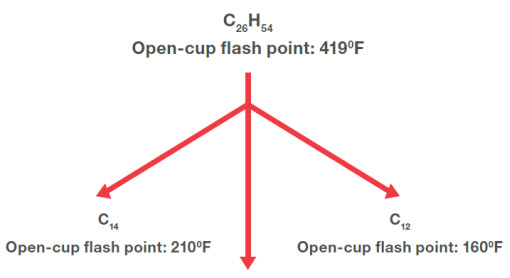
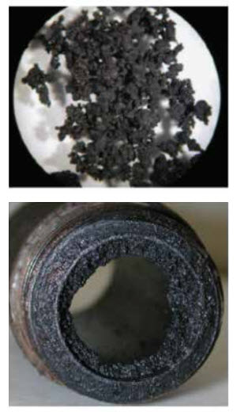
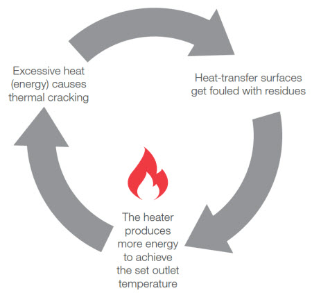
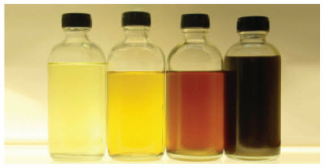

기술백서
To appreciate how to retain a fresh fluid’s properties, we must first understand the system’s operational threats to the fluid’s efficacy.
Heat transfer systems are designed to carry thermal energy away from a heat source using a heat transfer fluid. Each system is designed and sized around the physical properties of brand-new, uncontaminated fluid. The performance of the system is dependent on keeping the fluid in optimal condition.
The challenge for operators is that the heat transfer fluid – the lifeblood of the system – will slowly degrade, leading to fouled surfaces where the exchange of heat occurs. This in turn increases the energy required to maintain temperature, and eventually decreases efficiency and productivity. The inevitable outcome is longer downtime for maintenance, which requires unplanned expenditure. When fluid degradation occurs, its initial properties change and will continue to do so as the severity of degradation increases.
The question for operators now becomes: How to keep the system as efficient and productive as it was on the first fill, with a fluid that will degrade over time and use?
This white paper aims to answer that question. Although no expert can keep heat transfer fluid fresh forever, system operators can certainly prolong the retention of fresh fluid properties by avoiding common degradation threats and selecting a better fluid for the application.
There are two fluid temperatures to consider as it circulates throughout the system. Understanding the fluid temperature profiles throughout heat transfer system is necessary for safe and effective system operation.
The first temperature to note is the bulk-oil temperature (Tbulk). This is set by the user, as the programmed temperature at which fluid is expected to exit the heat source. For example, in a furnace where the heat transfer fluid flows through a pipe surrounded by heat (as shown in Figure 1), Tbulk is meant to represent the temperature of the oil molecules in the center of the pipe.
Figure 1

Figure 1: The bulk-oil temperature is the heater outlet temperature. The skin-film temperature is the fluid temperature at the pipe wall. Use the skin-film temperature, rather than the bulk-oil temperature, as the basis for selecting a heat-transfer fluid.
The second is less known, it is the skin-film temperature (Tfilm). Also known as the tubeskin temperature, Tfilm is the temperature of fluid molecules immediately in contact with the pipe wall, the heating element, or any surface that separates the fluid from the source of direct heat. Unfortunately, Tfilm is not indicated on a panel or a screen, it’s calculated by the engineers who did the energy exchange calculations in the design phae of the system. Any modification or expansion of the system configuration or operating temparture requires a new calculation of Tfilm.
In all cases, Tfilm will be higher than Tbulk, but the movement of the molecules in a turbulent flow regime will try to force a redistribution of heat within the oil towards the center of the pipe.
In well-designed systems – where the oil’s flow rate is sufficient (i.e. high Reynolds number with strong turbulent flow) and the heat flux is reasonable (i.e. 12-16 W/in2 in electrically heated applications) – Tfilm will be only slightly higher than Tbulk.
The gap between skin-film and bulk-oil temperatures is affected by system parameters (e.g. pump size, heater conditions, pipe diameter, etc.); fluid properties (i.e. viscosity, density, thermal conductivity, heat capacity, etc.); and operating conditions (i.e. fluid velocity, thermal energy from the heat source, etc.).
However, if a fluid has a high viscosity (due to degradation or when it’s cold at system start-up), its flow rate decreases (due to a pump problem or a pipe obstruction, for example), the energy required to maintain the necessary Tbulk will increase, and cause the Tfilm to become much higher than Tbulk. In this situation, a fluid operating near its maximum rated Tbulk may suddenly be exposed to a significantly higher skin-film temperature than it can safely tolerate, which accelerates thermal cracking (see below). More importantly, however, as Tfilm approaches the fluid’s boiling point and auto-ignition temperature (AIT), it increases the risk of a serious safety hazard.
Equipped with this knowledge, best practice is to
select a heat transfer fluid based on the
application’s Tfilm,
rather than its Tbulk.
With temperature differences in mind, we can explore the three most common threats to the useful life of the fluid:
- Thermal degradation
- Oxidative degradation
- Process or external contamination
Thermal degradation occurs when fluid molecules receive more thermal energy than they can absorb and carry away. This excess energy causes the bonds between the atoms of that molecule to break.
In organic-based heat transfer fluids – such as petroleum oils or chemical aromatics – thermal cracking is the breaking of the covalent carbon-carbon or carbon- hydrogen bonds, which are normally very stable and require high amounts of energy to degrade.
This type of degradation is a function of both the oil’s inherent ability to absorb heat and the heat flux inside the heat source – the amount of energy the fluid receives during its residence time in the presence of heat.
Figure 2a illustrates a simplistic example of what happens to a typical ISO Viscosity Grade 32 mineral-oil-based heat transfer fluid in thermal cracking,. Excess energy breaks the long hydrocarbon molecule, comprised predominantly of 26 carbon atoms long, into two shorter molecules of 12 and 14 carbons. These short molecules are called low boilers, because they have lower boiling points than the 26-carbon molecule. As the concentration of low boilers increases over time, the volatility of the fluid increases and that translates directly to a reduction in the flash point, fire point and possibly auto-ignition temperature.
Figure 2a

Figure 2b

Figure 2a/b: A hydrocarbon in a mineral-based heat transfer fluid undergoes thermal degradation, which creates lighter hydrocarbons with lower viscosities and flash points, and heavy carbon deposits (FIGURE 2b).
In an open system, where the hot operating fluid is directly in contact with air, a reduction in fire point and flash point could pose a significant safety hazard, and safe venting or even fluid replacement will be required.
Another concern with thermal cracking is the formation of coke-like residue in the system (as shown in Figure 2). This occurs when thermal cracking forms high boilers, which are high-carbon, low-hydrogen molecules.. As these abrasive, coke-like molecules keep on forming and accumulate, they contribute to fouling of surfaces in the heat source, obstructing lines and elbows, and damaging pump seals. In systems with electrical heat, the residue will coat the electrical elements and grow thicker over time; in a furnace, they will form layers inside the heater coil. In both cases, this will act as an insulator.
The residue becomes a problem when the heater, set to a certain temperature, must then produce more thermal energy to pass through not only the pipe wall, but also the carbonaceous layer to get to the fluid. The additional heat raises the Tfilm of the system, causing the gap between Tfilm and Tbulk to widen. This creates a cycle of thermal degradation (see Figure 3) –excessive heat causes thermal cracking of the heat transfer fluid, which causes the formation of high boilers and build-up of residue on heating surfaces, forcing the heater to produce more energy to maintain the fluid’s Tbulk.
Figure 3

Figure 3: Thermal cracking of the heat transfer fluid that occurs at the heat source can create high boilers – long molecules that agglomerate and bake on the hot surface of the heat source or pipe wall. Over time, the carbonaceous residue forms a layer on the heat source that acts as an insulator. The heater must then produce more energy to raise the temperature of the fluid to the set point temperature, which in turn causes more thermal cracking. Thus, a cycle of thermal degradation occurs.
Even when systems operate at temperatures that are considered relatively mild, the fluid is not exempt from thermally degrading or its useful lifespan shortening.
To successfully address thermal cracking it’s important to:
Use the right fluid. Choose a heat transfer fluid with high thermal stability. For example, petroleum-based fluids formulated with severely hydrotreated white oils have greater thermal stability than traditional mineral oils. Most problems associated with localized or temporary temperature anomalies are preventable.
Vent safely and properly. Venting allows operators to release light, volatile hydrocarbons that are formed during thermal cracking out of the fluid and system. In most systems, the evacuation of low boilers involves circulating some of the hot fluid to the expansion tank, so that the molecules with a high vapor pressure can naturally migrate into the gas phase and exit the fluid. Depending on the system design, the vapors can then be released into the atmosphere, or condensed and collected into a drum or tank and disposed of in accordance with local regulations.
Fresh fluid will need to be added to maintain the fluid level after venting. The safe addition of fresh fluid must never be added directly into the hot oil stream, but rather into the expansion tank or other cool reservoirs connected to the system fluid. Venting continuously or for extended periods of time is not recommended because the rise in fluid temperature in the expansion tank will accelerate oxidation or it may cause a safety concern as the temperature of the fluid in contact with air approaches its flash point.
It’s important to make good use of the oil vendor’s used oil analysis program to understand the rate of low boiler generation in any operation. With venting and fluid analysis, how often and how long the fluid must be vented can be established.
Adopt proper start-up and shut-down procedures. Start-up and shut down processes account for many instances of thermal cracking. It’s not how hot you get, it’s how quick you’re trying to get there. Despite being under pressure to start-up and bring the temperature up as quickly as possible, rapid start-up and improper shut down can drastically shorten the life of the fluid and decrease the efficiency of the system. Starting a system at ambient conditions and raising the temperature to 400-500°F (204-260°C) should take place over several hours to minimize heat flux. Mineral oils behaviour is such that their viscosity drops by approximately 70% from 21°C to 49°C (70°F to 120°F). This makes a huge difference in the Reynolds number and ability to have turbulent flow. The temperature increase has to be mild enough at start-up, at least until the Reynolds number of the fluid becomes high enough to tolerate a higher heating rate. As the temperature increases, the viscosity drop of the fluid is less pronounced and therefore the temperature rise of the system can be more aggressive to get to operating temperature.
Shut down of a heat transfer system can also have a destructive effect if the pump is turned off too early.
Even if the heat has been shut off, furnaces contain refractory material that can retain heat for several hours, continuing to heat stagnant oil in the piping and causing thermal cracking. It is very important to maintain fluid circulation for several hours after the heat has been turned off – until it has cooled down to 150°F (65°C) – to prevent exposing the fluid to excessive heat.
Tips to reduce thermal degradation in the system:
- Monitor and control the system’s heat flux
- Maintain the pumps
- Use fluid analysis to look for early signs of oil degradation and solids content
- Continuously filter the oil with high-temperature glass media filters down to at least 50 μm
- Adopt best practices for start-up and shut down
Oxidation can occur through the reaction of heat transfer fluid with oxygen in the air. Like other organic matter, exposure to oxygen causes fluid degradation.
Oxidation is largely related to temperature. The higher the temperature, the faster the rate of oxidation. A general rule of thumb is with every 18°F (10°C) temperature increase, the rate of oxidation doubles. By-products of degradation for mineral oil or synthetic chemical aromatic-based fluids can include substances such as carboxylic acids, ketones and aldehydes.
The first visible evidence of the oxidation process is:
- The gradual discoloration of the fluid (see Figure 4)
- Increased viscosity
- The formation of insoluble compounds and sludge
Figure 4

Figure 4: Progressive discoloration occurs when a heat transfer fluid is exposed to oxygen over time.
Oxidation by-products are not very soluble in oil and they tend to adhere to cooler metallic surfaces or settle in low-flow areas, like the bottom of the expansion reservoir. It is very difficult to completely remove these by-products with cleaning and flushing fluids.
Draining the heat transfer fluid will not remove all of the sludge from the piping. At this point, only manual removal or using chemical cleaning agents will help restore the system’s initial efficiency. Failing to remove the acidic residue will shorten the life of the fresh fluid if not removed as it will act as a catalyst to accelerate corrosion. Therefore, it’s important to monitor and manage the oxidation level of the fluid. A partial system replacement every few years will go a long way to maintain system efficiency rather than letting oxidation takes its toll and force a system shut down for days for cleaning, flushing and recharge.
To address oxidation, we need to consider the role of:
Inert gas blanketing. In closed systems, the most effective way to eliminate oxidation is to install an inert gas blanket in the expansion tank. This relies on substituting air with an inert gas, as without oxygen to react with, oxidation can not occur. The most common gas used for gas blanketing of expansion tanks is nitrogen, but carbon dioxide and argon have been used too. The pressure of the inert gas is maintained slightly above atmospheric pressure, usually around 2 psig (14 kPa). Ongoing inspection and maintenance to prevent leaks are vital as leaks will negate the purpose of the gas blanketing system and effectively release money into thin air.
Fluid choice. Another way to deal with oxidation is to select a fluid that contains the right oxidation inhibitors. The type and number of oxidation inhibitors used and the quality vary widely from product to product. Some fluids use no anti-oxidants, others use conventional anti-oxidants, while the more sophisticated heat transfer fluids use synergistic additive chemistries designed to better withstand the high temperatures of heat transfer systems.
Oxidation inhibitors work in a variety of ways but usually by reacting with free radicals and oxygen compounds (like peroxides) before they can react with the oil molecules. Be aware that some fluids on the market are not additized and are therefore more susceptible to fouling and have lower oxidation stability.
Systems containing a large amount of oil are typically more forgiving because there is a lot of antioxidants and it takes a while to oxidize such a large volume. In which case, experience, benchmarking, and regular used-oil analysis are important for judging oxidation stability to assist in the selection of heat transfer fluid.
Open systems exposes hot fluid to air all the time, which increases the importance of choosing a robust product with antioxidants – preferably one designed to deal with air exposure. Even then, frequent change-outs are required and system cleaning or flushing should be done periodically, as often as every third oil change, if optimal efficiency is a concern.
Internal process contamination. Contamination can damage both the heat transfer system components and its fluid. While logic suggests contamination is unlikely because the pressure is greater on the fluid side, on-site experience shows that process material can enter the fluid stream. The urgency required to fix a leak depends on chemistry of the contaminant, the fluid used and the severity of the situation. While it’s easy to identify a leak is occurring, more challenging is for the end user to identify exactly where the leak is coming from.
For example, in the oil and gas industry, process hydrocarbon gas can enter the fluid. This gas mixes very well with a mineral-based or chemical aromatic fluid and the viscosity of the entire charge will be reduced, while the volatility will increase. Asphalt is also a commonly seen contaminant that can have the opposite effect and drastically increase oil viscosity and the number of high boilers that foul the piping. Vanadium is a tell-tale sign of asphalt ingression into the oil system.
In some cases, the contaminant may be inert to the fluid but it may react with traces of moisture to form acidic or insoluble compounds that threaten to accelerate corrosion and fluid degradation.
External contamination. Beyond internal process leaks, contamination can occur from the elements, condensation, foreign liquids and airborne ingression. For systems where the expansion reservoir is outside and vented to the atmosphere, it is critical to have a tank with a 180° goose neck pipe on the top. Though it might sound basic, there have been cases where a bolted cover had been removed and forgotten, allowing rainwater and snow to pour into the expansion tank, resulting in high water content and abrasive dust circulating through the system.
Another common issue is new system contamination. Used systems bought at auction for example, should get cleaned and flushed before being connected to the system. Newly constructed heat transfer systems are often pressure tested with water but are seldom flushed with a virgin mineral oil before the first charge, probably to minimize project cost. The negative effects of water are described below. For this reason, new systems should be flushed with a suitable and compatible fluid.
Although water in the heat transfer system is easily detected by operators, it is unforgiving and potentially dangerous, as it boils and turns to steam while the fluid circulates. Water will affect different fluids in different ways.
In mineral-based, synthetic Group IV PAO oils or chemical aromatics, prolonged exposure to water causes:
- Hydrolysis or precipitation of oil additives (in additized fluids)
- Accelerated corrosion of internal system
- Accelerated oxidation
- Pump cavitation and wear
- Knocking in the hot oil piping and gargling or splashing in the expansion tank
Based on real-life oil analysis, water does not appear to pose immediate productivity issues in concentrations below 500 ppm (0.05% wt.), although we have encountered more sensitive systems where lower concentrations have a noticeable impact. If no impact is felt but results of approximately 1,000 ppm (0.1% wt.) of water become more alarming and call for investigation and removal.
Investigate and fix. All cases of contamination must be investigated, fixed and reported to your fluid supplier for advice on potential impact on the metallurgy, the oil and the additives at operating temperature. Their knowledge of the product helps system operators to assess the situation and formulate a possible course of action. Sometimes the contaminant can be evacuated, diluted or boiled off.
Prevention. Companies and builders rarely factor in the cost of a system flush. They assume the cleaning and commissioning will be managed by the contractor commissioning the system, and that no debris or water from the pressure testing will be left in the piping. Discovering that pressure-test liquid was not removed from the system once it is up and running may prove costly down the road. Initial flushing costs are even less considered when the fluid of choice is expensive, like silicone-based or perfluoroether fluids. It is a good practice nevertheless, and it will prove worthwhile over time.
Filters. With new system designs increasingly including oil filters, it is important to keep a log book of solids collection in the oil filters or strainers, and include photographs, if possible. The size, texture and color of deposits will tell a story. The deposits must be sent to a research facility or laboratory with sophisticated equipment for accurate identification. Third-party verification is important, as solids could come from more than one source.
Solids from previous fluids could reside in the system for a long time before they are loosened and finally get carried to the pump strainer or oil filter. This is common when used furnaces are purchased and commissioned without being cleaned and flushed prior to being connected to the main system.
Another case for sending deposits to a laboratory is that, even though solids may have a familiar smell or texture, they could turn out to be something else. What might seem like black, abrasive carbon particles could be copper sulfide, which is caused by the localized chemical attack of sulfur—present in some fluids’ base stock – on the copper from the brass valves. In this example, the assumption that the deposits were carbon might result in a lot of money spent replacing fluids or adding filtration, when in reality, it was the valve construction or the selection of the fluid itself that caused the issue. A switch to a better heat transfer fluid based on highly refined API Group II base oils, containing virtually no active sulfur, would however prove effective.
It is important to consider routine maintenance steps to prolong the life of heat transfer fluids in hot oil circulating systems, such as:
- Monitor for alarms on the main heater and react swiftly, whether it’s a blinking red light or a notification on the operator console.
- If not collected electronically, measure key parameters (flow rates, temperatures, pressures, etc.) on gauges at various locations on the system and ensure results are consistent with design specifications.
- Track energy consumption, the fluid temperature in the heater and the Tbulk at the outlet. If the process temperature requirement remains constant but the heater needs to run hotter to maintain the fluid temperature, the fluid may be slowly thickening or deposits could be forming on the heat transfer surfaces, reducing efficiency.
- Record the fluid temperature at the inlet and outlet of the heat source. The difference should be within certain recommended industry and manufacturer guidelines.
- Even if everything is running smoothly, it is recommended that an employee “walks the system” and vinspects the expansion tank on a regular basis. They might hear or discover an abnormality that otherwise would have gone unnoticed, such as a vibrating motor, a defective oil level gauge, a pump cavitating or an oil leak. Preventing possible issues through planned preventative maintenance will more than cover the cost required to carry out periodic inspections.
- Test the fluid periodically. Regular testing helps confirm the physical properties of the fluid, including the flash point and any changes that may be occurring. Compare the results against the properties of fresh fluid.
A note on investment. Selecting the right heat transfer fluid requires due diligence from multiple stakeholders within an organization—complete with full application analysis. Buyers should resist the temptation to settle on a low base price. Aside from the fact that the fluid plays an important role in the performance of the system and ability to deliver on production targets, it is also the case that the lowest price tag may not factor in the following variables:
- Costs associated with worker safety, such as training on, equipment for and protection from potential exposure to the fluid (in vapor and liquid form)
- Freight charges for delivery
- Cost associated with pickup, handling and disposal of used oil and drums
- Proven fluid performance beyond fresh oil data. Vendors should be able to prove retention of fresh fluid properties (e.g. thermal stability and oxidation data)
- Vendors should be able to prove retention of fresh fluid properties (e.g. thermal stability and oxidation data)
- Capability of the fluid with the current system (e.g. seals, expansion reservoir sizing, etc.)
- Miscibility with current heat transfer fluid, if partial-change out is needed
- Level of liability coverage and expertise the manufacturer offers
- Flexibility of the vendor to work with you on system cleaning or flushing projects, provide adequate fluid inventory and take back excess unused fluid
Regular fluid analysis is important, even if there is no reason to think there are issues with the system. Proactive testing can help detect potential problems early, before a costly reduction in productivity, or worse, a system failure. Testing also allows for better planning, as it may indicate the time frame for a fluid change-out. Here are guidelines for when to test the heat transfer fluid:
- During the first year of operation for brand new systems. Any major issues in the system that can affect the fluid will show up in the test results.
- Just after a fluid change. After a week or two, test the fluid even when using the same brand; there will have been enough change in the old fluid properties so that any residue will show up in the test results of the new charge.
- Annually, at least for large systems. Schedule a test yearly as a part of the preventative maintenance routine. The results will provide a current report on file for your insurance company.
When deciding how to test heat transfer fluid, it is advised to send a fluid sample to the fluid supplier’s laboratory. They will not only be able to run the tests; they can also interpret the results.
Analysts are looking at the overall condition of the fluid, and to a certain extent, for some insight into the condition inside the circulation system. The best way they can do this is by using regular samples to determine trends in the data. Useful information can certainly be extracted from a single data point, but established data trends provide more valuable data and increases the accuracy of a diagnostic for planning purposes.
At a minimum, a testing program for heat transfer fluids should perform the following tests:
Kinematic Viscosity (ASTM D445-18)
Measures the fluid’s resistance to flow. An increase in viscosity indicates the presence of high boilers, and a reduction in the fluid’s ability to transfer heat. A decrease in viscosity indicates the opposite: the presence of low boilers (which means a flash and possible auto-ignition temperature drop) and thermal cracking of the fluid may be occurring. The warning limit is a >30% increase; at this point, action should be taken, such as a partial or complete oil replacement.
Acid Number (AN) (ASTM D664-18e2)
Measures acidic compounds and therefore is an indirect determination of the extent to which fluid has been oxidized. Most fresh fluids have an AN of 0.05-0.10 mg KOH/g but consult your fluid supplier to understand their fresh oil starting point. The condemning limit is around 1.0 mg KOH/g, after which point sludge deposits tend to increase.
Cleveland Open Cup (COC) Flash Point (ASTM D92-18)
Measures the lowest temperature at which the fluid’s vapor will momentarily ignite (when in contact with an ignition source). When reduced, it often indicates contamination and thermal degradation. The warning limit is <300°f> <>
Insoluble Solids
Determines the concentration of insolubles in the fluid after filtration through a 0.8 micron filter. The measure of organic solids indicates the extent of fluid degradation and potentially how badly the system is fouled. Meanwhile, inorganic solids can indicate system corrosion and contamination. The alarm limit for solids is >0.5% wt.
Water Content (ASTM D6304-16e1)
Measures the amount of water present in the fluid. The warning limit is 1,000 ppm (equal to 0.1% wt) for most systems, unless lower concentrations have upset the operation. It’s normal for systems that operate steadily to have lower water concentrations than those that stop-start on a weekly or bi-weekly basis, for instance. In addition to the safety hazard of water boiling and splashing in the expansion tank, a high water content can lead to system corrosion, more rapid fluid oxidation and formation of acidic and corrosive substances. Water is most detrimental to aromatic fluids, in part because they are generally not additized, and therefore lack rust and corrosion inhibitors.
Metals Content (ASTM D5185-18)
Determines the concentration of approximately 25 elements simultaneously by inductively coupled plasma (ICP). The concentration levels highlight potential corrosion and/or contamination.
Obtaining accurate, third-party validated measurements of each of these variables will not only enable better informed operational decisions, they will also validate fluid recommendations, which can prove valuable if a change-out requires unplanned downtime and budget.
Remember, the system was designed around the properties of fresh heat transfer fluid, so to ensure a safe, predictable operation, operators must try to keep the difference between the current state and what is expected from a fresh fluid within a narrow range. There are many ways operators can proactively keep heat transfer fluid as fresh as possible for as long as possible, to keep the system productive and safe before inevitable change-outs and thorough system cleaning. We encourage operators to make routine inspections of the system, its components and the fluid, and to regularly have the system fluid properly tested in a laboratory.